MD Trader gives you the ability to quickly and safely enter orders for an instrument with a single click. The static price ladder gives you the confidence to enter an order at a specific price level, and the intuitive design of the widget allows you to manage your working orders and positions.
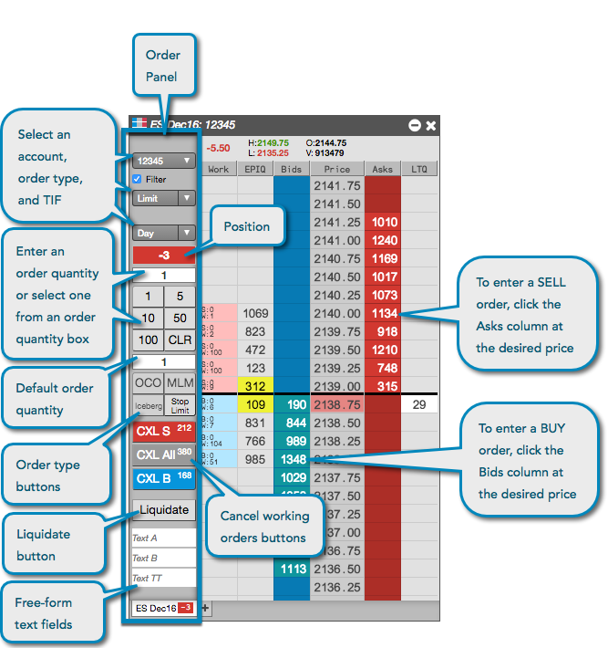
Using the order pane to configure an order in MD Trader, you can select an account, order type, order restriction, and order quantity. You can also add order buttons for natively supported and TT order types.
The account selector shows all accounts that have been assigned to you by your company administrator and have active connections to the exchange. Click the drop-down to select an account, which is required for submitting orders on TT.
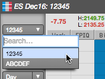
The order type selector shows all native exchange order types supported by TT, custom TT order types, third-party algos, or any ADL algos that you have deployed. Native order types vary by exchange.
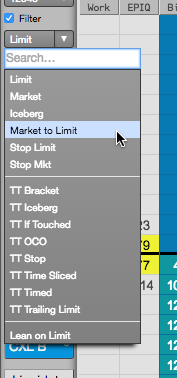
Note: The list includes only ADL algos and Order Ticket Algos (OTAs) you have permission to run.
The order buttons allow you to quickly submit an order type without having to select one from the drop-down list of order types for each order. Order buttons are a configuration option available in the MD Trader settings.
The Liquidate button is also an optional setting and provides with the ability to quickly flatten your position.
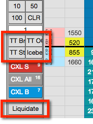
The time-in-force (TIF) selector shows all exchange-supported order restrictions supported by TT. Order restrictions vary by exchange. The default TIF is Day.
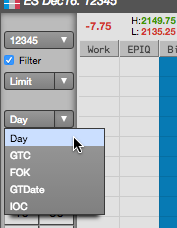
You can type an order quantity or enter one using the order quantity buttons. MD Trader displays the default order quantity field immediately below the quantity buttons. The value in this field populates the order quantity field after each trade.
The second default order quantity field provides the ability to right-click in the Bids and Asks column at a price level to submit an order with a different default order quantity. This feature is enabled in the MD Trader settings.
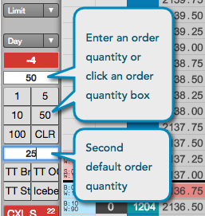
Tip: When second default order quantity field is blank, the value in the order quantity field is highlighted and becomes persistent.
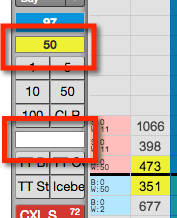
The free-form text fields in MD Trader allow you to send additional order routing and clearing information with an order.
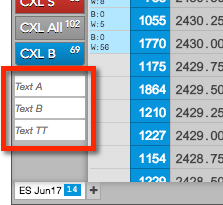
Orders are entered by clicking a cell in the Bids or Asks column at the desired price level.
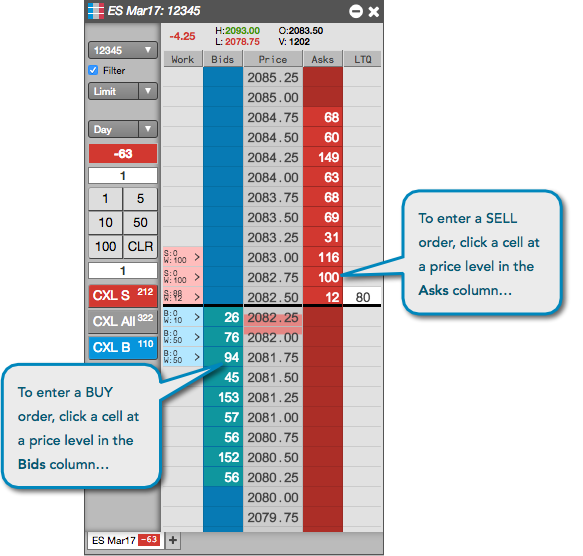
The cursor may be highlighted depending on which order type is selected.
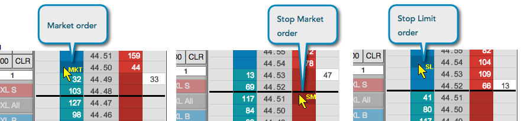
Orders are entered by clicking a cell in the Bids or Asks column at the desired price level.
The cursor may be highlighted depending on which order type is selected.
When you place an order at a price level, the corresponding cell in the working orders Work column contains abbreviations and colors to assist you in tracking and managing your working orders. The text and colors vary based on order type and order status. Refer to the following table for a description of the abbreviations and colors that appear in the working orders column.
|
Working Orders column |
Description |
|---|---|
|
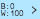 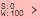 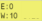 |
Appears for working buy or sell orders. The cell is highlighted blue for buy orders, red for sell orders or yellow when the price level contains both buy and sell orders. Abbreviations include:
|
|
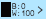 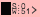 |
Appears in the outright legs of a spread order. The color bar matches the color configured for the spread in Autospreader®. The cell is highlighted blue for buy orders or red for sell orders. Abbreviations include:
|
|
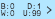 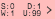 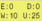 |
Appears when submitting TT order types (e.g., TT Time Sliced) or native order types (Iceberg) with disclosed and undisclosed quantities. The cell is highlighted blue for buy orders, red for sell orders or yellow when the price level contains both buy and sell orders. Abbreviations include:
|
You can also display only the working order quantities at each price level by enabling Display only the working qty for orders in the MD Trader settings.
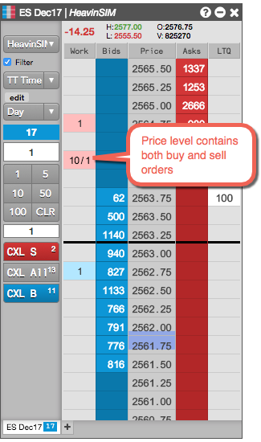
MD Trader can show your actual position in queue after you submit an order. CME disseminates individual orders on their Market By Order (MBO) price feed for all tradeable products, and MD Trader displays the position in queue for these orders in the optional PIQ column.
When multiple users share an account, PIQ is only displayed to the user who placed the order. Other users on that account will not see PIQ for that order.
Note: Position In Queue values are estimated on non-CME markets.
PIQ can be enabled either in Preferences or by showing the PIQ column in the MD Trader settings. When this setting is enabled, the PIQ column displays the PIQ values for visible orders.
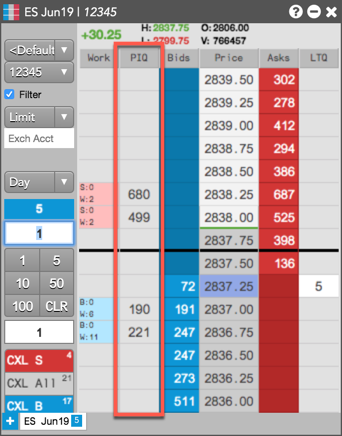
Your PIQ is only displayed and tracked when an order price is within the visible displayed market depth. When viewing PIQ, the PIQ number displayed in the column is black by default. If your order is the first in the queue, the background color turns black and the PIQ number "0" is white. If your order is at the inside market, the background color turns yellow.
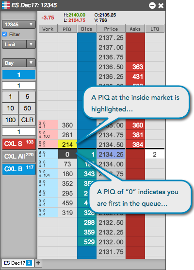
For non-CME products, TT provides your estimated position in queue (EPIQ) to show how many contracts are in front of your order at any given price. EPIQ is not sent from the exchanges, but is calculated by TT based on the quantity of trades occurring in front of the order, and is a conservative estimate of queue position that only reduces as trades occur. EPIQ is not reduced when orders in front of your order are canceled.
When viewing estimated PIQ for non-CME products, consider the following:
Note: In the Simulation environment, PIQ is estimated for all markets.
EPIQ is enabled and displayed in MD Trader the same as PIQ.
MD Trader provides optional columns that show the number of orders (i.e., headcount) that comprises the total bid and ask quantity at a price in the market. By viewing the number of orders, you can gain insight to the makeup of the bid or ask quantity displayed at a price level.
Some exchanges provide the number of orders in their market data feeds. If an exchange does not provide this data, TT calculates the number of orders based on the detailed depth provided by the exchange. If an exchange provides neither the number of orders or detailed depth, the optional columns for displaying the number of orders will be blank.
The number of orders values at a price level for bids and asks are displayed in the optional BCnt and ACnt columns. These columns are shown using the Show number of orders option on the MD Trader widget settings.
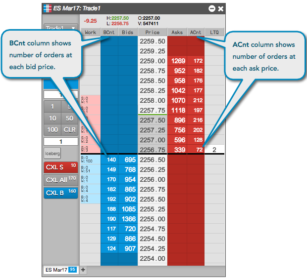
MD Trader displays your net positions for all instruments that have been configured for that particular widget. Each tab in the MD Trader displays your net position for the instrument on that tab. Additionally, your net position for the instrument on the tab that has focus is displayed in the upper right-hand corner of the widget. A long position is highlighted with a blue background, and a short position is highlighted with a red background.
Note: The position value is shown only if you enable filtering or if only one account is available for the instrument.
The price ladder in MD Trader shows the average price of all your fills at different price levels. You can use this price point to gauge whether trading out of your position will provide you with a realized gain, loss, or scratch. If you are short, the average price of all your sells is shaded red in the price ladder. If you are long, the average price of all your buys is shaded blue in the price ladder.

Note: The average price indicator is shown only if you enable filtering or if only one account is available for the instrument.